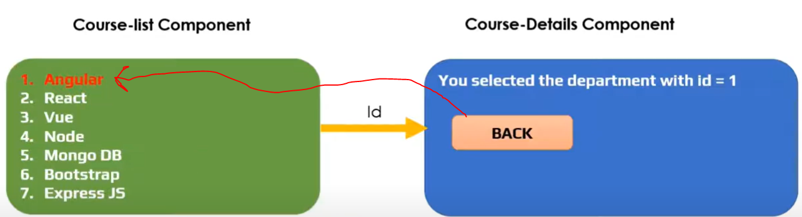
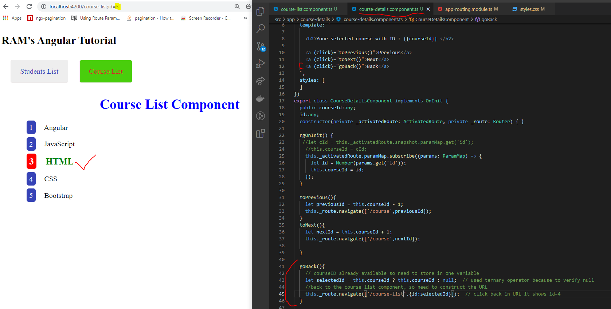
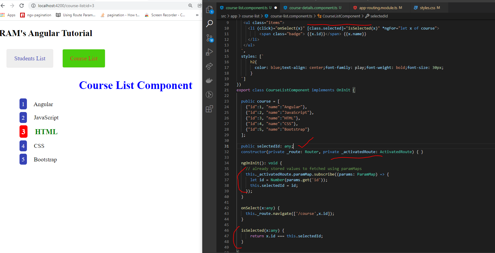

OPTIONAL ROUTE PARAMMAP
- Click on any one of the course list in course-list component and it is navigate to course-details component .
- in course-details component add the back button.
- When user click on back button it has been navigate to course-list and selected course was showing different color , for this actions we are using the optional route parammap's.

- course-details component like

- course-list component like
